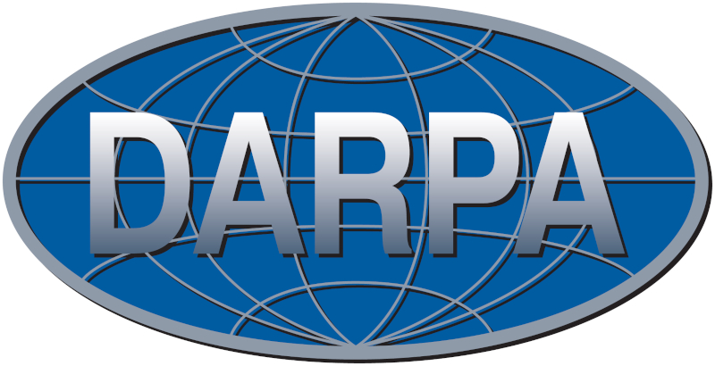
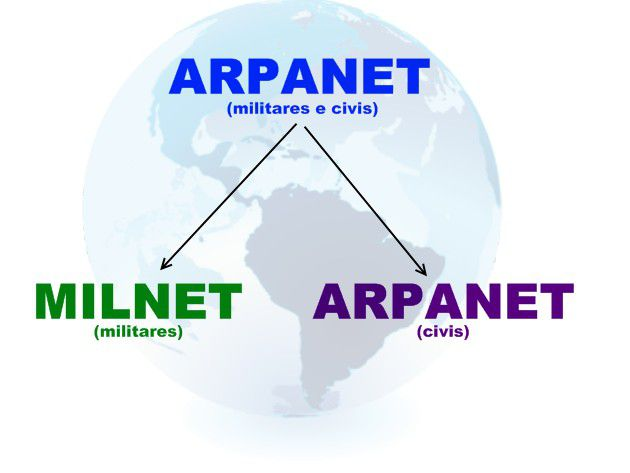
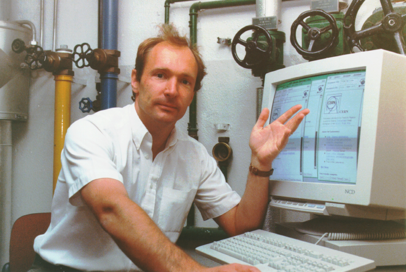

A História da Internet

Você pode não saber, mas muitas coisas que usamos ou consumimos no dia a dia, como Antibióticos e até M&M's, foram criados para suprir alguma necessidade em tempos de guerra.
Não foi diferente com a internet, que também foi criada para suprir uma necessidade do Governo Americano durante a Guerra Fria. Neste artigo, iremos mostrar um pouco sobre a tragetória da internet ao decorrer das décadas até hoje.
Fruto da Guerra Fria
Durante a Guerra Fria o governo dos Estados Unidos temia um ataque russo às bases militares. Um ataque poderia trazer a público informações sigilosas, tornando os EUA vulneráveis. Então foi idealizado um modelo de troca e compartilhamento de informações, era portanto, preciso criar uma rede.
O projeto ARPANET foi criado, sigla para Advanced Research Projects Agency Network, foi criado pela DARPA (Defense Advanced Research Projects Agency).
ARPANET funcionava através de um sistema conhecido como chaveamento de pacotes, que é um sistema de transmissão de dados em rede de computadores no qual as informações são divididas em pequenos pacotes, que por sua vez contém:
- Trecho de dados
- O endereço do destinatário
- Informações que permitiam a remontagem da mensagem original
Já na década de 1970, a tensão entre URSS e EUA diminui. As duas potências entram definitivamente naquilo em que a história se encarregou de chamar de Coexistência Pacífica. Não havendo mais a iminência de um ataque imediato, o governo dos EUA permitiu que pesquisadores que desenvolvessem, nas suas respectivas universidades, estudos na área de defesa pudessem também entrar na ARPANET.
Com isso, a ARPANET começou a ter dificuldades em administrar todo este sistema, devido ao grande e crescente número de localidades universitárias contidas nela. Dividiu-se então este sistema em dois grupos, a MILNET(Military Network), que possuía as localidades militares e a nova ARPANET, que possuía as localidades não militares. Além desses backbones, existem os criados por empresas particulares. A elas são conectadas redes menores, de forma mais ou menos anárquica.
Com a entrada de muitos pontos na rede e com métodos de comunicação diferentes entre eles, alguma atitude tinha que ser tomada, já que o antigo protocolo NCP já não estava mais aguentando. Robert Kahn da DARPA e ARPANET recrutaram Vint Cerf da Universidade de Stanford para trabalhar com ele nesse problema.
Em 1973, eles logo trabalharam com uma reformulação fundamental, onde as diferenças entre os protocolos de rede eram escolhidas pelo uso de um protocolo inter-redes comum, e, ao invés da rede ser a responsável pela confiabilidade, como no ARPANET, os hospedeiros ficaram como responsáveis. A Especificação do protocolo resultante contém o primeiro uso atestado do termo internet, como abreviação de internetworking.
O TCP/IP, um protocolo garante que todas as comunicações seguirão um mesmo padrão, permitindo que dispositivos que são diferentes, com tecnologias completamente distintas, possam se trocar mensagens. emergiu em meados do final de 1978, em forma quase definitiva. Em 1º de janeiro de 1983, data conhecida como Flag Day, o protocolo TCP/IP se tornou o único protocolo aprovado pela ARPANET, substituindo o antigo protocolo NCP.
O cientista Tim Berners-Lee do CERN, criou a World Wide Web (WWW), a linguagem HTML e o protocolo HTTP em 1992. Essa linguagem simples, mas eficiente, era usada para a criação dos sites com o conceito de hipertexto (documentos ligados entre si). A empresa norte-americana Netscape criou o protocolo HTTPS (HyperText Transfer Protocol Secure), possibilitando o envio de dados criptografados para transações comercias pela internet.